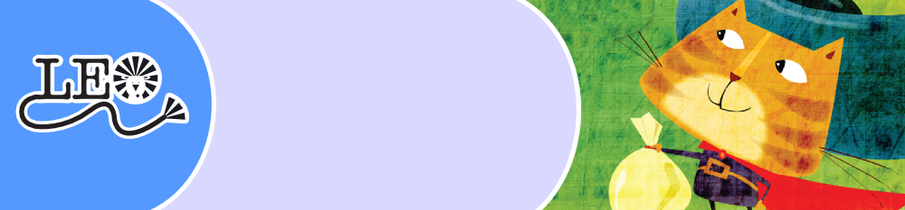
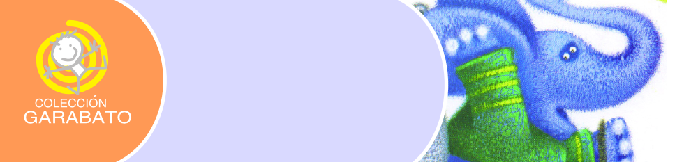
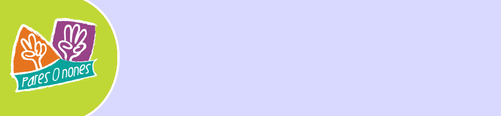
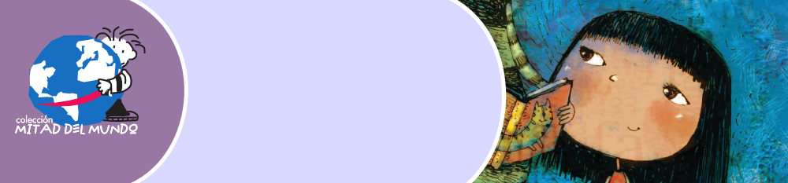
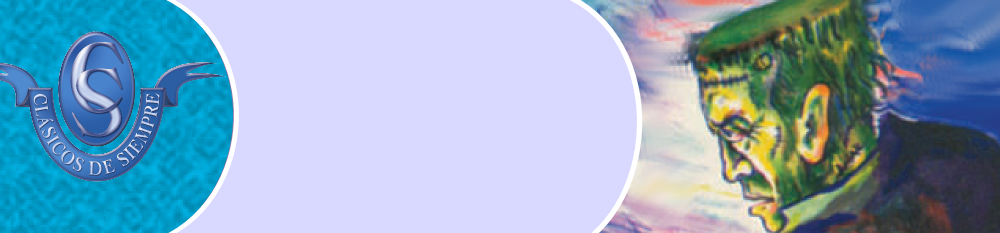
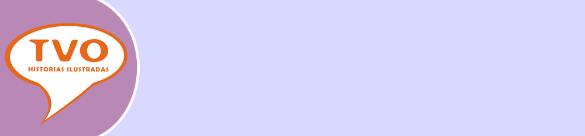
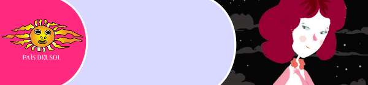
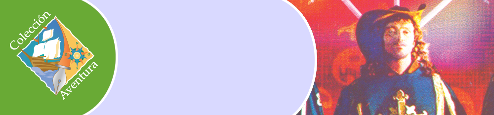
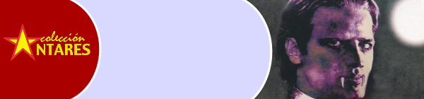
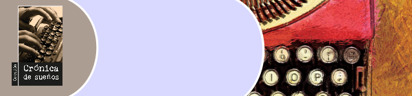

Las colecciones LEO CUENTOS, LEO FÁBULAS y LEO TRADICIONES están constituidas por textos íntegros o adaptaciones de cuentos, fábulas clásicas y tradiciones orales, acompañadas de ilustraciones de alta calidad.

GARABATO es una colección destinada a los lectores más pequeños.Se ha puesto especial cuidado en la calidad de las ilustraciones y los temas abordados tienen que ver con los intereses de los niños y niñas.

PARES O NONES. Colección destinada a los nuevos lectores, que empiezan a adentrarse en el mundo de la literatura con autonomía e interés creciente. Son libros de mediana extensión, que abordan temas cotidianos combinando adecuadamente realismo e imaginación, enriquecidos por una ilustración a color.

MITAD DEL MUNDO incluye obras relevantes de la literatura infantil contemporánea de Iberoamérica, que tratan temas de interés para los lectores, y que toman en cuenta valores humanos fundamentales.

Libros que han trascendido el tiempo y mantienen su vigencia,por la maestría literaria de sus autores. Las adaptaciones han sido preparadas de manera cuidadosa, respetando el espíritu inicial que las animó.

TVO es una colección que reúne novelas clásicas ecuatorianas,en estilo cómic, para provocar el acercamiento de niños y niñas a la lectura.

PAÍS DEL SOL es una colección que en su generalidad asume desde la literatura, los aspectos cotidianos y más acuciantes que deben enfrentar las y los jóvenes de hoy.

Reúne las principales obras, en versión completa, de autores importantes del género como Julio Verne, Emilio Salgari, Alejandro Dumas y otros, cuya imaginación fue capaz de ampliar el horizonte de la aventura humana.

Importante selección de la literatura universal, latinoamericana y ecuatoriana, en los diversos géneros y subgéneros literarios. Contiene valiosos estudios introductorios, elaborados por reconocidos especialistas.

Reúne obras de autores ecuatorianos contemporáneos, desde su vital manera de ver y sentir el mundo en que se desenvuelven, lo cual tendrá a su vez puntos coincidentes con la manera de ver y sentir el mundo de los lectores de hoy.
Reúne obras de autores ecuatorianos contemporáneos, desde su vital manera de ver y sentir el mundo en que se desenvuelven, lo cual tendrá a su vez puntos coincidentes con la manera de ver y sentir el mundo de los lectores de hoy.